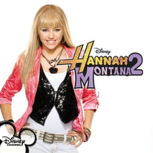
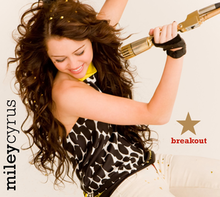
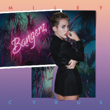
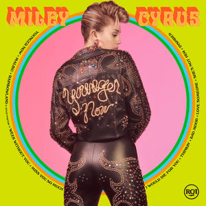

Miley Ray Hemsworth (nee Cyrus, born Destiny Hope Cyrus; November 23, 1992) is an American singer, songwriter, actress, and philanthropist. She has impacted pop culture and the music industry as a whole creating a powerful, vibrant image for herself.
Early Life & Career
1992–2002: Early life and career beginnings
Destiny Hope Cyrus was born November 23, 1992, in Franklin, Tennessee,
to Leticia (Tish) Jean Finley and country singer Billy Ray Cyrus.
Her parents married the next year. Cyrus was born with supraventricular
tachycardia, a condition causing an abnormal resting heart rate.Her birth name,
Destiny Hope, expressed her parents' belief that she would accomplish great things.
Her parents nicknamed her "Smiley", which they later shortened to "Miley",
because she often smiled as an infant. In 2008, she changed her name to Miley Ray Cyrus;
her middle name honors her grandfather, Democratic politician Ronald Ray Cyrus from Kentucky.
2003–2009: Hannah Montana and early musical releases
Cyrus auditioned for the Disney Channel television series Hannah Montana when she was
eleven years old.She auditioned for the role of the title character's best friend, but
was called to audition for the lead role instead.Despite being denied the part at first
because she was too "young and small" for the role, she was selected later as the lead because
of her singing and acting abilities. The series premiered in March 2006 to the largest audience
for a Disney Channel program, and quickly ranked among the highest-rated series on basic
cable.The success of the series led to Cyrus being labeled a "teen idol".
2010–2012: Can't Be Tamed and focus on acting
Hoping to foster a more mature image, Cyrus starred in the film The Last Song (2010),
based on the Nicholas Sparks novel.It garnered a generally negative critical reaction,
though it was a box office hit. Cyrus further attempted to change her image with the
release of her third studio album, Can't Be Tamed (2010).The album featured a more
dance-oriented sound than her prior releases, and caused a considerable amount of controversy
because of its lyrical content and Cyrus' live performances.It sold 106,000 copies in its
first week of release, and became her first studio album not to top the Billboard 200 chart
in the United States.Due to the controversy surrounding the release, the album's second, and
final single, "Who Owns My Heart" was released solely in select European territories.
Cyrus released her final soundtrack as "Hannah Montana" that October; it was a commercial failure.
2013–2015: Bangerz and Miley Cyrus & Her Dead Petz
In 2013, Cyrus hired Larry Rudolph to be her manager; Rudolph is best known for representing
Britney Spears.It was soon confirmed that Cyrus had signed a new recording contract with
RCA Records to distribute her future releases. She worked with producers such as Pharrell Williams
and Mike Will Made-It on her fourth studio album, resulting in a hip-hop influenced sound.
She collaborated with numerous hip-hop artists' releases and appeared on the Snoop Lion song
"Ashtrays and Heartbreaks" (2013), released as the lead single from his twelfth studio album, Reincarnated,
in April 2013. She worked with will.i.am on the song "Fall Down" (2013), released as a promotional
single that same month. The song entered the Billboard Hot 100 at number fifty-eight, marking her
first appearance on the chart since "Can't Be Tamed" (2010). She provided guest vocals on the
Lil Twist song "Twerk", which also featured vocals by Justin Bieber. The song went unreleased for
unknown reasons, though it was leaked online.On May 23, 2013, it was confirmed that Cyrus would be featured
on the Mike Will Made It single "23", with Wiz Khalifa and Juicy J. The single went on to peak at number
eleven on the Hot 100, and had sold over one million copies worldwide as of 2013.
2016–2017: The Voice and Younger Now
In 2016, following the release of her fifth studio album the previous year, Cyrus resumed working
on her upcoming sixth studio album. She was a key advisor during the tenth season of the reality
singing competition The Voice. In March, it was announced that Cyrus had signed on as a coach for the
eleventh season of The Voice as a replacement for Gwen Stefani; Cyrus is the youngest judge to appear in any
incarnation of the series. In September 2016, Cyrus co-starred in Crisis in Six Scenes, a television series
Woody Allen created for Amazon Studios. She plays the part of a radical activist who causes chaos in a conservative
1960s household while hiding from the police. On September 17, 2016, she appeared on The Tonight Show Starring Jimmy
Fallon where she sang Bob Dylan's "Baby, I'm In the Mood for You", a rendition that Fallon called "fantastic".
2018–present: She Is Miley Cyrus
Before the release of Younger Now in September 2017, Cyrus expressed she was "already two songs deep on the
next [album]. Producers attached to her seventh studio album include previous collaborator Mike Will Made
It and new collaborators Mark Ronson and Andrew Wyatt. Her first collaboration with Ronson, "Nothing Breaks
Like a Heart" from his 2019 album Late Night Feelings, was released on November 29, 2018. On May 31, 2019,
Cyrus tweeted that her seventh studio album would be titled She Is Miley Cyrus and would comprise three six-song EPs,
which would be released before the full-length album: She Is Coming on May 31, She Is Here in the summer,
and She Is Everything in the fall. She Is Coming debuted at number five on the US Billboard 200 with 36,000
album-equivalent units, while the single "Mother's Daughter" entered at number 54 on the US Billboard Hot 100.
Filmography
Big Fish (2003)
Hannah Montana and Miley Cyrus: Best of Both Worlds Concert (2008)
Bolt (2008)
Hannah Montana: The Movie (2009)
The Last Song (2010)
LOL (2012)
So Undercover (2012)
So Undercover (2012)
Miley: The Movement (2013)
The Night Before (2015)
A Very Murray Christmas (2015)
Crisis in Six Scenes (2016)
Guardians of the Galaxy Vol. 2 (2017)
iHeart Radio music festival on CW Network (2019)
Cultural Impact
In the early years of her career, Cyrus had a generally wholesome image as a teen idol.
Her fame increased dramatically following the Vanity Fair photo scandal, and it was reported
that photos of Cyrus could be shopped for $2,000 apiece. In the following years, Cyrus'
image continued to shift dramatically, differing from her previous teen idol status. Donny
Osmond wrote of Cyrus' transition into adulthood: "Miley will have to face adulthood.....
As she does, she'll want to change her image, and that change will be met with adversity.
"The release of Can't Be Tamed (2010) saw Cyrus officially attempting to distance herself from
her teenage years, releasing controversial music videos for her songs "Can't Be Tamed" (2010) and
"Who Owns My Heart" (2010). Her behavior generated a considerable amount of controversy
throughout 2013 and 2014, though godmother Dolly Parton stated "...the girl can write. The girl can
sing. The girl is smart. And she doesn't have to be so drastic. But I will respect her choices.
I did it my way, so why can't she do it her way?"
Cyrus was placed at number seventeen on Forbes' list of the most powerful celebrities in 2014,
with the magazine noting that "The last time she made our list was when she was still rolling in
Hannah Montana money. Now the pop singer is all grown up and courting controversy at every turn.
In August 2014, it was reported that Bluewater Productions has documented her life in a comic book
called Fame: Miley Cyrus, starting with her controversial 2013 MTV Video Music Awards performance
to her Disney fame, and exploring her childhood in Tennessee. The comic book was written by Michael
L. Frizell and drawn by Juan Luis Rincón, and is available in both print and digital formats.[291]
In September 2010, Cyrus was ranked number ten on Billboard magazine's first ever list of Music's Hottest
Minors of 2010,and was ranked number twenty-one on the 2011,and number eighteen on the 2012
version of the list.In May 2013, Maxim ranked Cyrus first on their Hot 100 of the year. Cyrus
was chosen by Time magazine as one of their finalists for Person of the Year in November 2013.She
came in third place with 16.3% of the vote. In March 2014, Skidmore College, New York started offering
a special topics sociology course entitled "The Sociology of Miley Cyrus: Race, Class, Gender and Media"
which was "using Miley as a lens through which to explore sociological thinking about identity, entertainment
, media and fame".In 2015, Cyrus was listed as one of the nine runners-up for The Advocate's Person of the Year.
Millenial
Generation Z
Baby Boomers
Positive Opinion Percentage
45%
35%
25%
Discography
Meet Miley Cyrus | Released: June 26, 2007

Breakout | Released: July 22, 2008

Bangerz | Released: October 8, 2013

Miley Cyrus & Her Dead Petz | Released: August 30, 2015 Younger Now | Released: September 29, 2017
